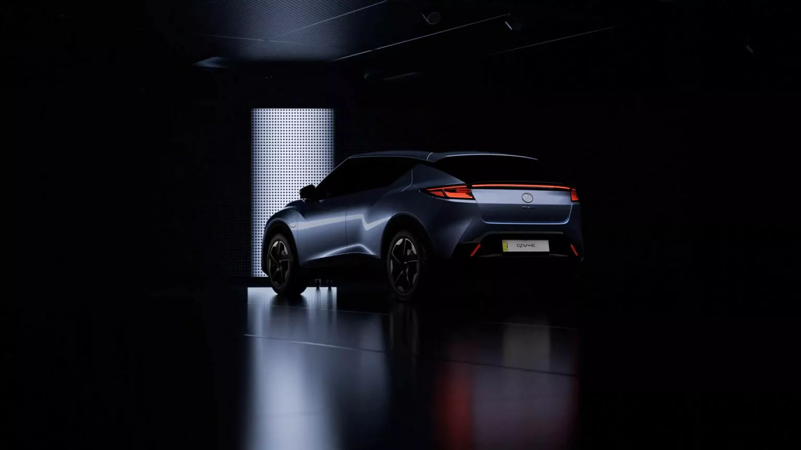
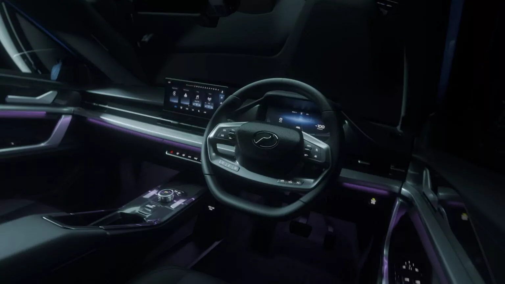

As the industry shifts further into electrified mobility, the ability to accurately recognise different types of electric vehicles is no longer optional—it is essential. For a Sales Advisor, correct identification shapes the quality of every customer interaction. Before explaining specifications, charging requirements, or performance characteristics, you must first be absolutely certain of the type of vehicle you are discussing. Misidentification does more than create confusion; it directly undermines credibility. Customers may not challenge the mistake, but they will remember the inconsistency.
Not all electrified vehicles operate the same way. A conventional Hybrid, a Plugin Hybrid (PHEV), and a Fully Electric Vehicle each function differently. They charge differently. They serve different customer needs. They come with different questions, expectations, and concerns. When assumptions replace verification, the risk of giving inaccurate advice increases significantly. In a market where confidence matters, accuracy becomes your most valuable tool.

There are two structured methods of identifying an electrified vehicle: observing the exterior and examining the interior. Both methods require careful attention and discipline. A single indicator is rarely sufficient to confirm vehicle type. Correct identification relies on combining multiple signs to build a complete picture.

Exterior
Exterior features can provide useful preliminary indicators when identifying electrified vehicles. These indicators assist in forming an initial assessment of the vehicle’s propulsion technology; however, they should always be interpreted collectively rather than relied upon individually. A systematic evaluation of multiple observable characteristics improves the accuracy of vehicle identification.
One of the most immediate indicators is the badge or emblem displayed on the vehicle. Labels such as “Hybrid,” “S-Hybrid,” or “EV” commonly signify the presence of electrified technology. These badges are typically positioned at the rear or side of the vehicle and are designed to visually differentiate electrified models from conventional variants within the same product lineup.
Although badges provide a convenient initial reference, they should not be regarded as definitive confirmation of vehicle type. Vehicle owners may remove or modify badges, and manufacturers occasionally revise badge designs across different model generations. As a result, relying solely on this indicator may lead to inaccurate conclusions. Badge identification should therefore be treated as a preliminary cue that requires further verification through additional observable features.
Another contextual indicator is brand association. Certain manufacturers are widely recognized for producing fully electric vehicles, which can increase the likelihood that a vehicle belongs to the fully electric category. Brands such as Tesla and BYD are frequently associated with battery electric vehicle production. Nevertheless, brand recognition alone cannot be considered definitive evidence of vehicle type. Many automotive manufacturers produce both conventional internal combustion engine vehicles and electrified models within the same brand portfolio. As a result, brand identity may guide an initial assumption but should not replace verification through additional indicators.
Another important external feature is the presence of a charging port. A visible charging inlet indicates that the vehicle is designed to receive electrical energy from an external power source. This characteristic is typically associated with Plug-in Hybrid Electric Vehicles (PHEVs) and Battery Electric Vehicles (BEVs). Conventional Hybrid Electric Vehicles (HEVs), which rely solely on internal charging through regenerative braking and engine-generated electricity, do not require external charging and therefore do not include a charging port. While the presence of a charging port confirms plug-in capability, it does not by itself distinguish between a PHEV and a fully electric vehicle. Further assessment is therefore required to determine the specific type of electrified vehicle.
The design of the front grille may also provide supportive visual information. Fully electric vehicles often feature closed or minimal grille designs because they do not require the same level of airflow for engine cooling as vehicles powered by internal combustion engines. However, the reliability of this indicator has been reduced by contemporary vehicle styling trends. Some petrol-powered vehicles adopt aerodynamic front designs with minimal grille openings, while certain electric vehicles incorporate conventional grille elements for aesthetic purposes. Consequently, grille design should be regarded as a supplementary indicator rather than definitive confirmation of electrification.
In the Malaysian context, an additional visual cue may be provided through special vehicle number plates designated for electric vehicles. These plates are intended to distinguish fully electric vehicles and can reinforce other indicators observed during exterior inspection. Nevertheless, consistent with the principles of systematic identification, this feature should be considered alongside other observable characteristics before drawing a final conclusion regarding the vehicle’s propulsion system.
Overall, accurate identification of electrified vehicles through exterior observation requires the integration of multiple indicators. Badge identification, brand association, charging ports, grille design, and national vehicle identification markers each provide partial information. When evaluated collectively, these indicators contribute to a more reliable determination of the vehicle’s electrification type.

Interior
While exterior observation provides an initial assessment of a vehicle’s propulsion technology, interior inspection offers stronger confirmation of the system architecture. Internal displays and components reveal information directly related to how the vehicle generates, stores, and utilizes energy, making them more reliable indicators when identifying electrified vehicles.
One of the primary interior indicators is the central display screen. Many electrified vehicles, particularly Battery Electric Vehicles (BEVs) and Plug-in Hybrid Electric Vehicles (PHEVs), include digital interfaces that present information related to battery status, charging levels, driving modes, and energy consumption. In many cases, the display may also show energy flow diagrams illustrating how power moves between the battery, electric motor, and internal combustion engine. These graphical representations provide insight into the vehicle’s propulsion system and are often a clear indication that the vehicle utilizes electrified technology.
Another key component visible through the vehicle’s information system is the high-voltage battery. Electrified vehicles rely on a high-voltage battery pack to store electrical energy used for propulsion. In fully electric vehicles, this battery serves as the primary energy source that powers the electric motor. Plug-in hybrid vehicles also contain a high-voltage battery, although it is typically smaller because it works in combination with an internal combustion engine. The presence of battery status indicators, charging levels, or range estimation on the display often reflects the operation of this high-voltage battery system.
Additional confirmation may be obtained through inspection of the engine compartment, when access is available. Electrified vehicles typically contain bright orange high-voltage cables, which are internationally standardized safety markers used to identify components that carry high-voltage electrical current. These cables connect the high-voltage battery to major electrical components such as the inverter and the electric motor. Their presence indicates that the vehicle incorporates high-voltage electrical systems associated with hybrid or electric propulsion.
High-voltage systems are also commonly accompanied by warning labels located within the engine bay. These labels serve as regulatory safety indicators designed to alert technicians and users to the presence of high-voltage electrical components. They confirm that the vehicle contains electrified hardware, including battery systems and associated power electronics. In fully electric vehicles, the high-voltage battery pack is significantly larger and functions as the sole energy source responsible for vehicle propulsion.
Another useful indicator can be observed in the instrument cluster. Conventional internal combustion engine vehicles typically include a tachometer displaying engine revolutions per minute (RPM). In contrast, electrified vehicles often replace the tachometer with alternative displays such as power usage meters, regenerative braking indicators, or battery state-of-charge information. Additional indicators such as “EV Mode,” “Ready,” or “Charge” may also appear within the instrument cluster, reflecting the operational characteristics of electrified propulsion systems rather than conventional engine behaviour.
Accurate identification of electrified vehicles requires systematic observation and verification. Exterior features may provide initial cues regarding the presence of electrified technology, while interior indicators offer stronger confirmation of the vehicle’s propulsion architecture. Evaluating both external and internal characteristics allows for a more reliable determination of vehicle type and supports a clearer understanding of electrified vehicle systems.

Apabila industri semakin bergerak ke arah mobiliti elektrik, keupayaan untuk mengenal pasti jenis-jenis kenderaan elektrik dengan tepat bukan lagi pilihan, tetapi satu keperluan. Bagi seorang Sales Advisor, pengecaman yang betul akan mempengaruhi kualiti setiap interaksi dengan pelanggan. Sebelum menerangkan spesifikasi, keperluan pengecasan atau prestasi kenderaan, anda perlu benar-benar pasti jenis kenderaan yang sedang dibincangkan. Kesilapan mengenal pasti bukan sekadar menyebabkan kekeliruan, malah boleh menjejaskan kredibiliti. Pelanggan mungkin tidak menegur kesilapan itu, tetapi mereka akan ingat ketidakkonsistenan tersebut.
Tidak semua kenderaan yang menggunakan teknologi elektrifikasi berfungsi dengan cara yang sama. Hybrid biasa, Plug-in Hybrid (PHEV), dan kenderaan elektrik sepenuhnya masing-masing beroperasi secara berbeza. Cara pengecasannya berbeza. Keperluan pelanggan yang memilihnya juga berbeza. Soalan, jangkaan dan kebimbangan pelanggan terhadap setiap jenis kenderaan juga tidak sama. Jika anda membuat andaian tanpa memastikan terlebih dahulu, risiko memberi penerangan yang tidak tepat akan meningkat dengan ketara. Dalam pasaran di mana keyakinan sangat penting, ketepatan maklumat menjadi aset paling bernilai.
Terdapat dua kaedah utama untuk mengenal pasti jenis kenderaan elektrifikasi: melalui pemerhatian pada bahagian luaran dan pemeriksaan pada bahagian dalaman. Kedua-dua kaedah ini memerlukan perhatian yang teliti dan disiplin. Satu petunjuk sahaja biasanya tidak cukup untuk mengesahkan jenis kenderaan. Pengecaman yang tepat bergantung kepada gabungan beberapa tanda supaya gambaran yang diperoleh benar-benar jelas dan menyeluruh.

Luaran Exterior
Proses mengenal pasti biasanya bermula dengan pemerhatian pada bahagian luaran kenderaan. Petunjuk visual yang paling mudah dilihat selalunya ialah lencana atau emblem pada kereta. Label seperti “Hybrid”, “SHybrid”, “ePower”, atau “EV” biasanya menunjukkan bahawa kenderaan tersebut menggunakan teknologi elektrifikasi. Lencana ini kebiasaannya terletak di bahagian belakang atau sisi kenderaan. Walaupun ia membantu, ia tidak boleh dijadikan satu-satunya bukti. Ada pemilik yang menanggalkan lencana, dan ada juga pengeluar yang menukar reka bentuk atau penamaan antara generasi model. Oleh itu, pemerhatian tambahan masih diperlukan sebelum membuat kesimpulan
Pengenalan jenama juga boleh membantu dalam membuat anggaran awal. Sesetengah pengeluar seperti Tesla atau BYD memang terkenal dengan kenderaan elektrik. Namun ini hanya memberi petunjuk awal, bukan pengesahan sepenuhnya. Banyak jenama hari ini menawarkan kedua-dua versi petrol dan elektrik, jadi jenama hanya boleh dijadikan rujukan sokongan.
Satu lagi petunjuk luaran yang kuat ialah kewujudan port pengecasan. Jika sebuah kenderaan mempunyai port pengecasan, ia biasanya sama ada Plug-in Hybrid (PHEV) atau kenderaan elektrik sepenuhnya (BEV). Hybrid biasa yang tidak boleh dicas melalui plug tidak akan mempunyai ciri ini. Walaupun port pengecasan menunjukkan bahawa kenderaan tersebut boleh dicas, ia masih tidak dapat menentukan sama ada ia PHEV atau BEV. Tafsiran lanjut masih diperlukan.
Reka bentuk gril hadapan juga kadangkala boleh memberi petunjuk. Kenderaan elektrik sepenuhnya biasanya memerlukan aliran udara yang lebih sedikit berbanding enjin petrol, jadi banyak model EV menggunakan gril yang tertutup atau sangat minimal. Namun, trend reka bentuk moden menjadikan petunjuk ini kurang konsisten. Sesetengah kereta petrol kini mempunyai reka bentuk hadapan yang lebih bersih dan aerodinamik, manakala ada EV yang masih mengekalkan rupa gril tradisional. Oleh itu, reka bentuk gril lebih sesuai dijadikan petunjuk sokongan, bukan penentu utama.

Dalaman Interior
Di Malaysia, satu lagi petunjuk yang boleh membantu ialah nombor plat khas yang diperkenalkan untuk kenderaan elektrik. Plat ini boleh menguatkan kesimpulan bahawa kenderaan tersebut adalah EV sepenuhnya. Namun prinsipnya tetap sama: pengesahan tidak boleh bergantung kepada satu petunjuk sahaja. Terlalu yakin berdasarkan satu pemerhatian adalah antara kesilapan yang paling kerap berlaku.
Selepas pemerhatian luaran memberi gambaran awal, pemeriksaan di bahagian dalaman boleh memberikan pengesahan yang lebih kuat. Di dalam kenderaan, paparan pada skrin tengah selalunya menunjukkan maklumat penting. Banyak EV dan PHEV memaparkan tahap bateri, status pengecasan, mod pemanduan elektrik atau rajah aliran tenaga. Paparan ini biasanya menunjukkan bagaimana tenaga bergerak antara bateri, motor elektrik dan enjin. Maklumat seperti ini memberi gambaran yang lebih jelas tentang sistem kuasa sebenar kenderaan dan jauh lebih sukar untuk disalah tafsir.
Jika ada peluang untuk melihat ruang enjin, beberapa petunjuk tambahan juga boleh dikenal pasti. Kabel berwarna oren terang merupakan tanda universal bagi sistem voltan tinggi. Kabel ini digunakan secara meluas dalam industri automotif untuk tujuan keselamatan, dan kehadirannya menunjukkan bahawa kenderaan tersebut mempunyai komponen elektrik atau hibrid. Label amaran voltan tinggi di bawah bonet juga menjadi petunjuk tambahan bahawa kenderaan itu dilengkapi dengan sistem elektrifikasi yang memerlukan pengendalian khas.
Paparan meter pada papan instrumen juga memberi maklumat penting. Kenderaan enjin pembakaran biasa biasanya mempunyai meter RPM. Dalam kenderaan elektrik pula, meter ini selalunya digantikan dengan paparan penggunaan kuasa, indikator brek regeneratif, atau status bateri. Perkataan seperti “EV Mode”, “Ready”, atau “Charge” mungkin muncul menggantikan istilah yang berkaitan dengan enjin. Perbezaan kecil seperti ini kadang-kadang terlepas pandang, tetapi sebenarnya menjadi petunjuk jelas bahawa kenderaan tersebut menggunakan sistem elektrifikasi.
Mengenal pasti kenderaan elektrik bukan sekadar menghafal senarai tanda, tetapi memerlukan pemerhatian yang teliti dan teratur. Petunjuk luaran membantu membentuk andaian awal, manakala petunjuk dalaman mengesahkan sistem sebenar kenderaan. Apabila jenis kenderaan dikenal pasti dengan tepat, anda boleh memberikan penerangan yang lebih tepat dan sesuai dengan keperluan pelanggan.
Kesilapan mengenal pasti jenis kenderaan boleh memberi kesan yang besar. Jika Plug-in Hybrid tersilap diterangkan sebagai EV sepenuhnya dan maklumat pengecasan yang salah diberikan, kepercayaan pelanggan boleh hilang dengan cepat. Dalam dunia jualan, pengenalpastian sentiasa datang sebelum cadangan.
Pemerhatian yang baik membina keyakinan. Keyakinan membina kepercayaan. Dan kepercayaan adalah asas kepada peranan Sales Advisor dalam pasaran automotif yang semakin menuju ke arah elektrifikasi.